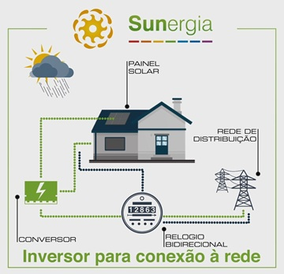
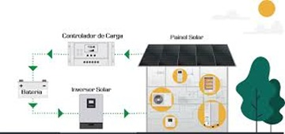

Tipos de Sistemas Fotovoltaicos
Sistemas Conectados à Rede (On-Grid)
Estes são os sistemas mais comuns em áreas urbanas e rurais com acesso à rede elétrica. Eles funcionam em conjunto com a concessionária de energia, injetando o excedente de energia gerado na rede e consumindo energia da rede quando a produção solar é insuficiente (por exemplo, à noite ou em dias muito nublados). O principal benefício é a possibilidade de compensação de energia, onde o usuário recebe créditos pela energia injetada, reduzindo significativamente a conta de luz. Não requerem baterias para armazenamento, o que reduz o custo inicial e a complexidade da instalação.
Adaptado em: Sistemas Conectados à Rede (On-Grid)
Sistemas Isolados (Off-Grid)
Projetados para locais remotos ou onde a conexão à rede elétrica é inviável ou muito cara, os sistemas off-grid são completamente independentes. Eles são essenciais para garantir o fornecimento de energia em áreas sem infraestrutura. Para assegurar o abastecimento contínuo, especialmente durante a noite ou em períodos de baixa irradiação solar, esses sistemas incluem um banco de baterias para
Adaptado em: Sistemas Isolados (Off-Grid)
Sistemas Híbridos
Como o nome sugere, os sistemas híbridos combinam as características dos sistemas on-grid e off-grid. Eles estão conectados à rede elétrica, mas também possuem um sistema de armazenamento de energia (baterias). Essa configuração oferece maior segurança energética, pois o sistema pode operar de forma autônoma em caso de falha da rede (blackout), utilizando a energia armazenada nas baterias. Além disso, permite otimizar o consumo de energia, armazenando o excedente para uso posterior ou para injetar na rede em momentos de maior demanda ou preços mais altos, maximizando a economia e a autossuficiência.
.png)
Adaptado em: Sistemas Híbridos